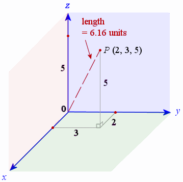
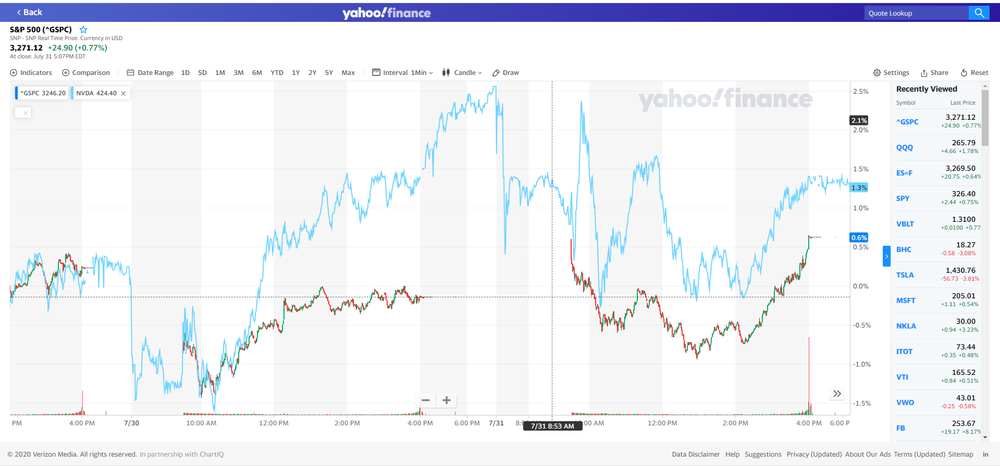
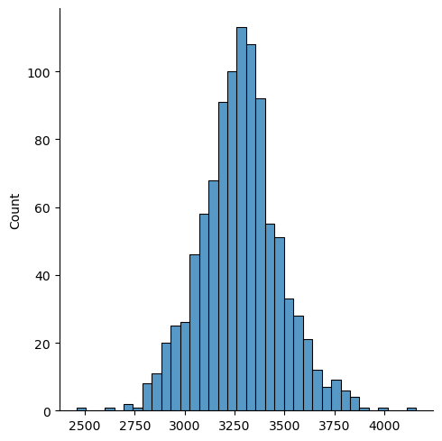
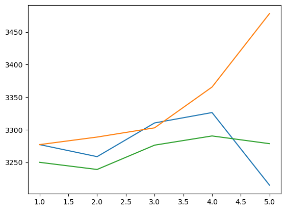
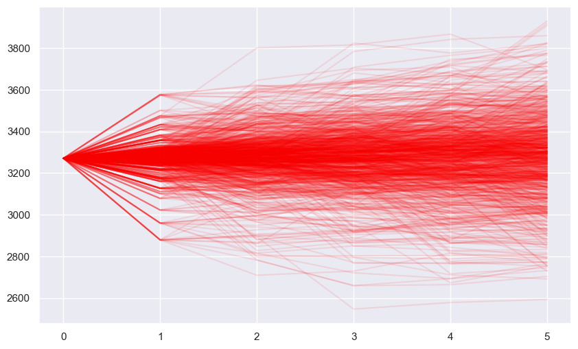
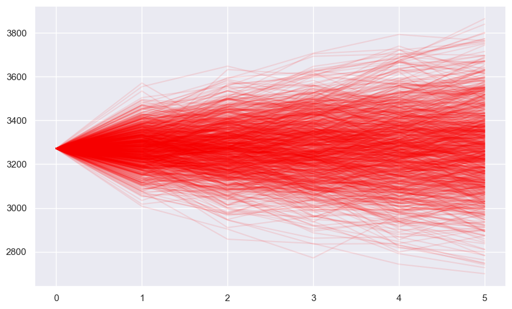
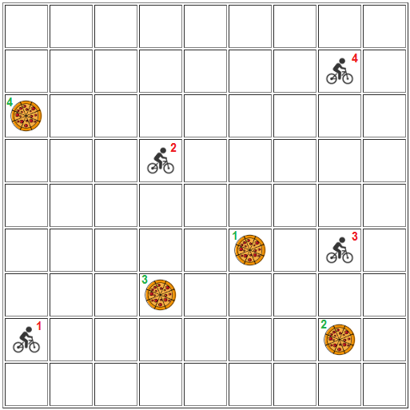
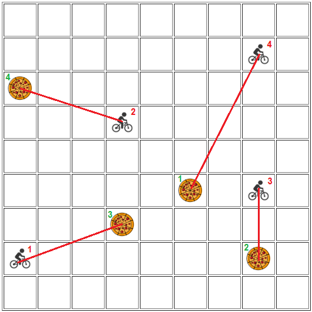

Richard Waterman
October 2026
The next-generation of HPC technology offers great promise for supporting scientific research. Exascale supercomputers – machines capable of performing a quintillion, or a billion billion, calculations per second – are expected to become a reality in the next few years. This change in the power of HPC technology, coupled with growing use of machine learning , will be vital in ensuring the success of big science projects …

A key operation for vectors is the “dot product”.
If we have two vectors x and y, where \(x = \begin{pmatrix}x_1 \\ x_2 \\ x_3 \end{pmatrix}\) and \(y = \begin{pmatrix}y_1 \\ y_2 \\ y_3 \end{pmatrix}\) , then their dot product, written as \(x \cdot y\) , is: \(x_1 y_1 + x_2 y_2 + x_3 y_3\) .
For an example let’s say \(x = \begin{pmatrix} 2 \\ 3 \\ 5 \end{pmatrix}\) and \(y = \begin{pmatrix} 3 \\ 2 \\ 4 \end{pmatrix}\) , then their dot product is \(2 * 3 + 3 * 2 + 5 * 4 = 6 + 6 + 20 = 32\) .
In numpy these vectors would be called arrays .
import numpy as np
x = np.array([2,3,5])
y = np.array([3,2,4])
np.dot(x,y) # The dot product between two vectors.np.int64(32)[5 5 9]
[ 6 6 20][2, 3, 5, 3, 2, 4]---------------------------------------------------------------------------
ValueError Traceback (most recent call last)
Cell In[4], line 3
1 a = np.array([2,3,5])
2 b = np.array([3,2,4,7,2,8])
----> 3 print(a + b)
ValueError: operands could not be broadcast together with shapes (3,) (6,) sq_length_x = np.dot(x,x) # The dot product command.
print("The length of the vector is", np.sqrt(sq_length_x)) # numpy has its own square root.The length of the vector is 6.164414002968976length_x = np.sqrt(np.dot(x,x))
length_y = np.sqrt(np.dot(y,y))
result = np.dot(x,y)/(length_x * length_y)
print(result)0.9639603730060448np.random.seed(0)
x1 = np.random.randn(10000000) # A long random vector
y1 = np.random.randn(10000000) # A long random vector
x2 = list(x1) # The same numbers as above, but now in a list.
y2 = list(y1)
print(type(x1)) # Confirming that we have two different data structures.
print(type(x2))<class 'numpy.ndarray'>
<class 'list'>4.51 ms ± 140 μs per loop (mean ± std. dev. of 7 runs, 100 loops each)1.24 s ± 71.7 ms per loop (mean ± std. dev. of 7 runs, 1 loop each)print ("With the numpy dot product the answer is", dot_p)
print ("With the for loop the answer is", counter)With the numpy dot product the answer is -822.279631499945
With the for loop the answer is -822.2796314999154A = np.array([[3 , 2 , 6], [ 4 , 7 , 5]]) #A vector of vectors.
print(A)
a_trans = A.T
print("\nThe transpose is:\n", a_trans)[[3 2 6]
[4 7 5]]
The transpose is:
[[3 4]
[2 7]
[6 5]]A = np.array([[3 , 2 , 6], [ 4 , 7 , 5]]) #A vector of vectors.
B = np.array([[1 , 4 , 2 , 9], [4 , 2 , 1 , 3], [6 , 2 , 4 , 9]])
print(A @ B) # Note the "@" to multiply two matrices.[[ 47 28 32 87]
[ 62 40 35 102]]C = np.array([[1 , 2 , 1], [1 , 1 , 0], [1 , 0 , 0]]) # Enter the matrix.
C_inv = np.linalg.inv(C) # The matrix inverse function.
print("Here's the inverse:\n", C_inv)
# Confirm it really is the inverse:
print("\nHere's the identity matrix obtained from their product:\n", C @ C_inv)Here's the inverse:
[[ 0. 0. 1.]
[-0. 1. -1.]
[ 1. -2. 1.]]
Here's the identity matrix obtained from their product:
[[1. 0. 0.]
[0. 1. 0.]
[0. 0. 1.]]import os
import numpy as np
np.set_printoptions(precision=5, suppress=True)
import pandas as pd
os.chdir('C:\\Users\\water\\Dropbox (Penn)\\Richard\\Teaching\\4770f2025_Q1\\DataSets')
race_data = pd.read_csv("Run5K.csv")
race_data['Finish_Time'] = race_data['Time_mins'] + race_data['Time_secs']/60 # Calculate the actual race time.Y = np.array(race_data['Finish_Time'] ) # The outcome variable.
X = np.array(race_data['AGE']) # The AGE variable.
X = np.stack([np.ones(len(X)), X]).T # We prepend a column of 1's to capture the constant term, and transpose the result.
print(X[0:5]) # Just look at the top 5 rows:[[ 1. 21.]
[ 1. 21.]
[ 1. 20.]
[ 1. 19.]
[ 1. 19.]]array([24.16335, 0.06884])
from PIL import Image # PIL is an image processing library
os.chdir('C:\\Users\\water\\Dropbox (Penn)\\Richard\\Teaching\\4770f2025_Q1\\Notes\\images')
im = Image.open("sophy_bw.bmp") # Open up Sophy's image.
sophy = np.array(im) # Turn Sophy's image into a numpy array.
print(sophy.shape) # Confirm her shape.
sophy[128:160, 128:160] # Review a small piece of Sophy (256, 256)
array([[False, False, False, ..., True, True, True],
[False, False, False, ..., True, True, True],
[False, False, False, ..., True, True, True],
...,
[ True, True, True, ..., True, True, True],
[ True, True, True, ..., True, True, True],
[ True, True, True, ..., True, True, True]], shape=(32, 32))

os.chdir('C:\\Users\\water\\Dropbox (Penn)\\Richard\\Teaching\\4770f2025_Q1\\DataSets')
sp_data = pd.read_csv("S_and_P.csv") # Read in the prices.
print(sp_data.head(5)) Date ClosePrice
0 1/2/2020 3257.850098
1 1/3/2020 3234.850098
2 1/6/2020 3246.280029
3 1/7/2020 3237.179932
4 1/8/2020 3253.050049returns = sp_data['ClosePrice'].pct_change()
print(returns[:5]) # The first element is missing because it has no prior price.0 NaN
1 -0.007060
2 0.003533
3 -0.002803
4 0.004902
Name: ClosePrice, dtype: float641 -0.007060
2 0.003533
3 -0.002803
4 0.004902
5 0.006655
Name: ClosePrice, dtype: float64np.random.seed(1234)
week_returns = np.random.choice(returns, size=5, replace=True) # A random draw of 5 returns.
print(week_returns) # Have a look at the sample.
price_mults = (1 + week_returns) # Calculate the price multipliers.
print(price_mults)[-0.09511 -0.00824 -0.04336 -0.00565 0.01243]
[0.90489 0.99176 0.95664 0.99435 1.01243]# The cumulative product of the price multipliers.
price_mults.cumprod() # Note the last element is 0.90489 * 0.99176 * 0.95664 * 0.99435 * 1.01243 = 0.86428array([0.90489, 0.89743, 0.85852, 0.85367, 0.86428])# If the initial price were 3000 then after 5 days the price would be
3000 * price_mults.cumprod()[-1] # This is 3000 * 0.86428 = 2592.84.np.float64(2592.8395299664826)np.random.seed(1234)
init_price = 3271.12
sim_size = 1000
price_vec = np.empty(sim_size)
for i in range(sim_size):
week_returns = np.random.choice(returns, size=5, replace=True)
price_mults = (1 + week_returns)
final_price = init_price * price_mults.cumprod()[-1]
price_vec[i] = final_price
price_vec[:10] # Have a look at just the first ten prices.array([2827.16308, 3308.59344, 3489.5888 , 3161.87936, 3469.18856,
3204.44453, 3285.68698, 3201.19699, 3743.90089, 2916.76575])

0.025 2884.708284
0.975 3694.499557
dtype: float64np.random.seed(12345)
init_price = 3271.12
sim_size = 1000
price_mat = np.empty((sim_size, 5)) # Note the matrix container.
for i in range(sim_size):
week_returns = np.random.choice(returns, size=5, replace=True)
week_mults = (1 + week_returns)
prices = init_price * week_mults.cumprod()
price_mat[i,:] = prices # Store the 5 prices in a single row.
price_mat[0,:] # Have look at the first row.array([3277.15042, 3258.65547, 3310.40855, 3326.33934, 3214.86165])sns.lineplot(x= range(1,6), y = price_mat[0,:])
sns.lineplot(x= range(1,6), y = price_mat[1,:])
sns.lineplot(x= range(1,6), y = price_mat[2,:]);

array([[3271.12 , 3277.15042, 3258.65547, 3310.40855, 3326.33934,
3214.86165],
[3271.12 , 3277.15042, 3288.72981, 3302.89575, 3365.52658,
3478.3256 ],
[3271.12 , 3249.94476, 3238.99666, 3276.32552, 3290.43803,
3278.59147],
...,
[3271.12 , 3078.30691, 3118.5122 , 3154.4525 , 2776.42117,
2797.71772],
[3271.12 , 3258.75994, 3304.11555, 3310.2068 , 3329.23083,
3374.67143],
[3271.12 , 3409.16974, 3486.99886, 3427.5321 , 3485.35984,
3496.951 ]], shape=(1000, 6))sns.set(rc={'figure.figsize':(10, 6)})
for i in range(sim_size):
sns.lineplot(x=range(0,6), y=price_mat_new[i,:], color="red", alpha=0.10)

price_mat_new = np.insert(price_mat, 0, init_price, axis=1)
sns.set(rc={'figure.figsize':(10, 6)})
for i in range(sim_size):
sns.lineplot(x= range(0,6), y = price_mat_new[i,:],color="red",alpha = 0.105)

| cardvalues | ACE | 2 | 3 | 4 | 5 | 6 | 7 | 8 | 9 | 10 | J | Q | K |
|---|---|---|---|---|---|---|---|---|---|---|---|---|---|
| cardcounts | -1 | 0.5 | 1 | 1 | 1.5 | 1 | 0.5 | 0 | -0.5 | -1 | -1 | -1 | -1 |
# Create the deck (we can simply use the counts vector to simplify the program)
card_counts = np.array([-1, 0.5, 1, 1, 1.5, 1, 0.5, 0, -0.5, -1, -1, -1, -1])
card_counts = np.repeat(card_counts, 4)
print(card_counts)
print("The length of the vector is", card_counts.shape)
np.random.shuffle(card_counts)
print(card_counts)
card_counts.cumsum()
if max(card_counts.cumsum()[:30] > 5):
print("Signal generated")
else:
print("No signal") [-1. -1. -1. -1. 0.5 0.5 0.5 0.5 1. 1. 1. 1. 1. 1.
1. 1. 1.5 1.5 1.5 1.5 1. 1. 1. 1. 0.5 0.5 0.5 0.5
0. 0. 0. 0. -0.5 -0.5 -0.5 -0.5 -1. -1. -1. -1. -1. -1.
-1. -1. -1. -1. -1. -1. -1. -1. -1. -1. ]
The length of the vector is (52,)
[ 0.5 -1. -1. -1. 1.5 1. 1. 1. 1. -1. 1. -1. -0.5 -1.
1. 1. -1. -1. 0. -1. 0. 0.5 -1. 0. -1. -1. -0.5 1.
-1. 1. 0.5 -1. 1.5 0.5 -1. -1. 0.5 -1. 1.5 -1. -0.5 1.
1. -1. 0.5 0. 0.5 -1. 1. -0.5 1.5 0.5]
No signalnp.random.seed() # Set the random number seed.
sim_size = 1000 # Decide on the size of the simulation.
results_vec = np.empty(sim_size) # Create an empty container for the results.
card_counts = np.array([-1, 0.5, 1, 1, 1.5, 1, 0.5, 0, -0.5, -1, -1, -1, -1])
card_counts = np.repeat(card_counts,4) # Make the card counts vector.
for i in range(sim_size): # Start the Monte Carlo loop.
np.random.shuffle(card_counts) # Shuffle the card deck.
if max(card_counts.cumsum()[:30]) > 5: # Look to see if the max of the cumsum is greater than 5.
results_vec[i] = 1
else:
results_vec[i] = 0
print("The estimated probability of an advantage signal is", sum(results_vec)/sim_size) # Calculate the proportion.The estimated probability of an advantage signal is 0.177

[[ 7. 7. 4. 5.]
[ 4. 8. 3. 4.]
[ 2. 2. 5. 10.]
[ 6. 6. 9. 8.]][[ 0 1 0 0]
[ 0 0 0 1]
[ 1 0 0 0]
[ 0 0 1 0]]rows = [1 2 3 4]
columns = [3 4 2 1][[ 0 0 1 0]
[ 0 0 0 1]
[ 0 1 0 0]
[ 1 0 0 0]]

from scipy.optimize import linear_sum_assignment
# Make a distance function that calculates grid distance between points.
def distance (x,y):
return sum(np.abs(x - y))
# Create arrays to hold bike and order locations.
bicycle_location = np.array([[1,2], [4,6], [8,4], [8,8]])
restaurant_location = np.array([[6,4], [8,2], [4,3], [1,7]])
dist_mat = np.zeros([4,4]) # Start with an empty matrix.
dims = dist_mat.shape
print (dist_mat)[[0. 0. 0. 0.]
[0. 0. 0. 0.]
[0. 0. 0. 0.]
[0. 0. 0. 0.]]for i in range(dims[0]):
for j in range(dims[1]):
dist_mat[i,j] = distance(bicycle_location[i,:], restaurant_location[j,:] )
print(dist_mat)[[ 7. 7. 4. 5.]
[ 4. 8. 3. 4.]
[ 2. 2. 5. 10.]
[ 6. 6. 9. 8.]]row_ind, col_ind = linear_sum_assignment(dist_mat) # The critical line, where the optimization happens.
print ("Optimal assignment is:")
print(row_ind) # Don't forget Python starts counting from 0,
print(col_ind) # but in the grid, I started counting from 1.
print ("Minimum cost is:")
print(dist_mat[row_ind, col_ind].sum()) # This adds up the elements in the distance matrix
# corresponding to the optimal assignment. Optimal assignment is:
[0 1 2 3]
[2 3 1 0]
Minimum cost is:
16.0